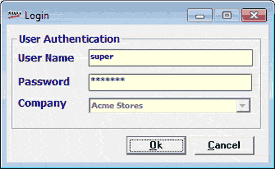

Security feature in Shoper 9 POS is designed to ensure appropriate control over usage of the application.
The concept of users and groups is used to simplify the security management feature in Shoper 9. This helps to group similar users and provide necessary rights to the users with ease.
Provision to restrict Users/ Groups/ Node from accessing selected menus is provided. You can also restrict Users/ Groups/ Node from performing operations such as Add, Edit, Print, View, Delete from Shoper 9 menu.
In a chain store, the security aspects of the POS locations can be managed from Shoper 9 HO.
How to reach: Setup > Supervisory Functions > Security Management
The Login window is displayed to confirm the supervisor's login ID and password.

User ID: Enter supervisor’s login ID (Default is super).
Password: Enter supervisor’s password (Default is nothing).
Note: Only users with administrative rights (super user) will be able to perform all functions in the security management option. Normal users will be able to perform only change password option.
Various activities that can be performed under Security Management are: